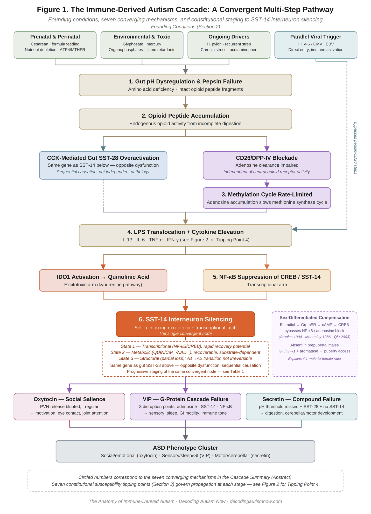
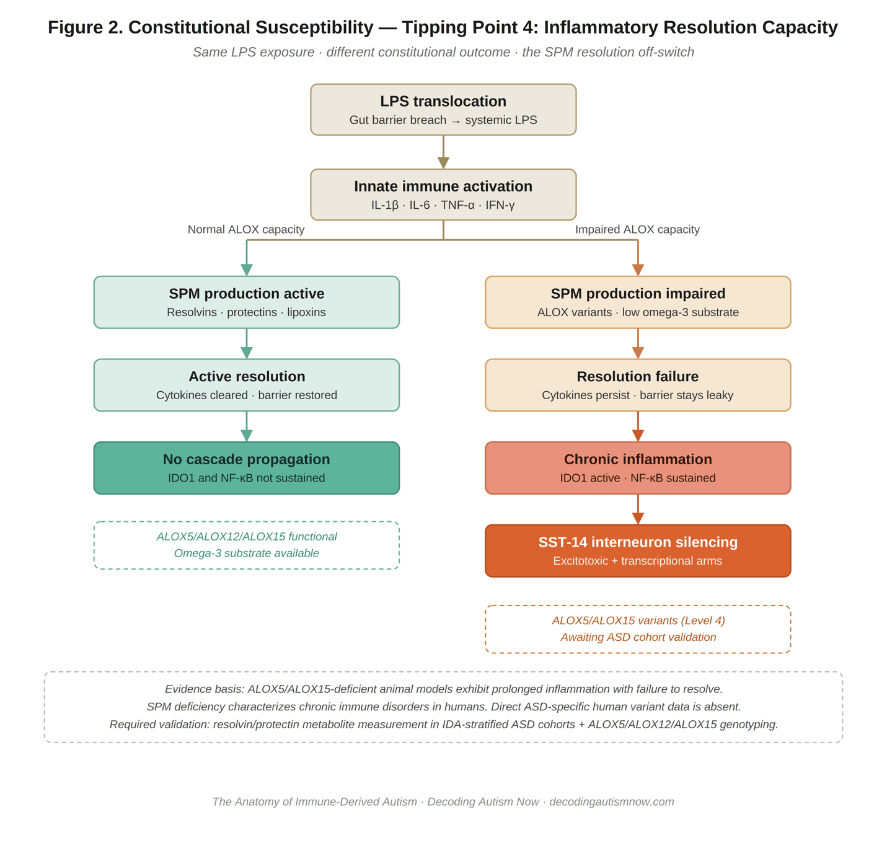

Autism spectrum disorder (ASD) is diagnosed in approximately 1 in 31 children in the United States[1] and carries a four-to-one male predominance that remains mechanistically unexplained. A significant subgroup presents with concurrent immune dysregulation, gastrointestinal dysfunction, sleep disruption, and metabolic abnormalities suggesting a shared biological origin distinct from primarily genetic or structural ASD subtypes. Decades of single-pathway clinical trials have produced inconsistent results in unselected populations, indicating that the relevant patient subgroup has not been prospectively identified.
We propose that a mechanistically distinct subgroup — immune-derived autism (IDA) — arises from a converging multi-step biological cascade originating in gut pH dysregulation, progressing through immune activation and metabolic disruption, and converging on the silencing of somatostatin-14 (SST-14) interneurons. SST-14 interneuron silencing disrupts the coordinated release of oxytocin, vasoactive intestinal peptide (VIP), and secretin, producing the social, sensory, sleep, gastrointestinal, cognitive, and motor features of the ASD phenotype cluster. Critically, the cascade propagates only in individuals whose constitutional susceptibility profile places multiple biological tipping points within reach of common environmental insults — a susceptibility architecture that explains why most individuals exposed to the same founding conditions do not develop IDA.
Seven converging mechanisms: (1) gut pH elevation disabling pepsin-mediated proline bond cleavage, producing amino acid deficiency and intact opioid peptide fragments; (2) opioid peptides driving CCK-mediated gut SST-28 overactivation and blocking CD26-mediated adenosine clearance; (3) adenosine accumulation rate-limiting the methionine synthase cycle; (4) LPS translocation and cytokine elevation activating IDO1 and diverting tryptophan toward quinolinic acid; (5) NF-κB suppression of CREB and SST-14 gene transcription; (6) convergence of excitotoxic and transcriptional suppression establishing a self-reinforcing biological latch; and (7) downstream neuropeptide cascade disruption producing the observable phenotype cluster.
The founding conditions are common across the general population. The cascade propagates only in individuals whose constitutional susceptibility profile reduces biological headroom at multiple cascade steps simultaneously. Seven tipping points are identified, each with named genetic, enzymatic, or immunological constitutional factors: reduced parietal cell acid output capacity (ATP4A/ATP4B variants); constitutively reduced DPP-IV/CD26 efficiency (Bashir & Al-Ayadhi 2014[2]); reduced methionine synthase cycle reserve (MTHFR C677T[3, 4], MTR/MTRR variants, folate receptor antibodies[5, 6]); impaired specialized pro-resolving mediator (SPM) capacity preventing resolution of innate immune activation (ALOX5/ALOX12/ALOX15 variants[7, 8, 9] — the most novel and least-evidenced tipping point, currently Level 4 in ASD); KMO variants biasing tryptophan metabolism toward quinolinic acid[10, 11]; reduced mitochondrial buffering reserve[12, 13]; and HLA class II architecture permitting molecular mimicry-driven autoantibody generation[14].
Four linked papers establish the compensatory pathway explaining the four-to-one male-to-female ratio. Montminy et al. (PNAS 1986)[15] identified the cAMP response element (CRE) in the somatostatin gene promoter. Montminy et al. (J Neuroscience 1986)[16] established that cAMP drives somatostatin mRNA accumulation in hypothalamic neurons. Aronica et al. (PNAS 1994)[17] established that estradiol activates membrane adenylyl cyclase nongenomically at physiological concentrations. Qiu et al. (J Neuroscience 2003)[18] characterized the complete Gq-mER → Gαq → PLC → DAG → PKCδ → adenylyl cyclase VII → cAMP → PKA → CREB chain in hypothalamic neurons by single-cell RT-PCR, providing a specific molecular explanation for the sex ratio that does not rely on genetic or diagnostic arguments.
IDA is distinguishable from genetic and structural ASD subtypes by a biomarker panel including K:T ratio, cytokine profiles, neuronal autoantibody titers, lactate-to-pyruvate ratio, and red blood cell mineral analysis. This panel extends into a constitutional susceptibility profile — a genomic and immunological fingerprint measurable before symptom onset, analogous to polygenic risk scores in psychiatry: not deterministic, but identifying individuals who warrant early monitoring and preventive intervention.
IDA represents a biomarker-definable, mechanistically coherent, and clinically actionable ASD subgroup. The two-layer model — cascade mechanism and constitutional susceptibility — provides the foundation for prospective biomarker-stratified intervention trials and offers a unified explanation for phenotypic heterogeneity, treatment inconsistency, and male predominance.
Introduction: A Convergent Cascade Model with Constitutional Susceptibility Architecture
Autism spectrum disorder does not have a single cause. A mechanistically distinct subgroup — immune-derived autism — has a single convergent mechanistic node through which a wide range of founding conditions produce the same downstream outcome. But the cascade model alone is incomplete. The other half is understanding who is constitutionally unable to buffer the insults that initiate it.
A comprehensive body of independent research has established immune dysfunction as a consistent finding across familial autoimmunity, maternal immune activation, neuroinflammation, and autoantibody generation in ASD subgroups[19] — with autoantibodies in a subset of children documented to target specifically GABAergic interneurons in the cerebellum and superficial cortical layers[19] — the cell class whose silencing is central to the cascade proposed here. A distinct picture of immune dysfunction has emerged from more than a decade of independent replication, yet no prior work has assembled these findings into a mechanistic cascade linking immune activation to a specific interneuron class and its downstream neuropeptide failure.
The founding conditions are diverse, and no two children with IDA necessarily share the same combination. Yet a significant proportion share the same outcome because all conditions converge on the same series of intermediate mechanisms and arrive at the same convergent point: SST-14 interneuron silencing in the cortex, hippocampus, and hypothalamus. The apparent heterogeneity of ASD reflects variation in the upstream cascade steps that drove SST-14 silencing — not variation in the downstream mechanism that produced the phenotype.
The founding conditions are common. C-section delivery, formula feeding, antibiotic exposure, acetaminophen use, and glyphosate exposure describe a large fraction of the general pediatric population. Most of those children do not develop IDA. The answer lies in constitutional biology: the genetically and immunologically determined capacity at each cascade step to absorb an environmental load before that step fails. The document is organized in two parts. Sections 2 and 3 describe the environmental founding conditions and then the constitutional susceptibility architecture. Sections 4 through 12 trace the cascade from pepsin failure through SST-14 silencing to the ASD phenotype cluster.

The Three Interneuron States: A Clinical Framework
SST-14 interneuron silencing progresses through three states that reflect the depth of the suppressive burden and determine which interventions are appropriate.
State 1 — transcriptional suppression: the interneuron’s structural and metabolic machinery is intact, but SST-14 gene expression is suppressed by NF-κB-mediated CREB inhibition and autoantibody-mediated surface receptor jamming. Removal of the upstream immune burden allows CREB to resume driving SST-14 expression; recovery can be relatively rapid.
State 2 — metabolic exhaustion: chronic quinolinic acid-driven calcium overload and NAD⁺ depletion have damaged mitochondrial function. Even when transcriptional suppression is relieved, the interneuron cannot resume tonic firing because mitochondrial substrate is depleted. State 2 requires both immune clearance and metabolic restoration. Constitutional mitochondrial reserve capacity (Tipping Point 6) determines which patients cross into State 2 at a given cascade burden.
State 3 — structural loss: progressive excitotoxic damage has produced partial interneuron loss. The A1/A2 astrocyte reversibility established by Liddelow et al.[20] indicates that even State 3 is reversible. The proposed A1-to-A2 transition mechanism: immunoglobulin therapy reduces IL-1α, TNF-α, and C1q — the three microglial signals necessary and sufficient for A1 polarization — while MSC-derived paracrine factors (TGF-β, HGF, PGE2) actively promote A2 polarization and restore hevin/SPARCL1 synaptogenic protein secretion.
Table 1 summarizes the three-state model.
| State | Silencing Mechanism | Key Biomarkers | Primary Intervention | Recovery Trajectory |
|---|---|---|---|---|
| State 1Transcriptional suppression | NF-κB-mediated CREB inhibition; autoantibody surface receptor jamming. Interneuron structurally intact. | Elevated K:T ratio; cytokine elevation (IL-6, TNF-α, IL-1β); autoantibody panel positive; homocysteine elevated; normal lactate:pyruvate | IMIG or IVIG to clear immune burden; adjunct protocol (zinc, NAC, sulforaphane, NMN/NR, tributyrin, taurine) | Relatively rapid; weeks to months. Most reversible state. |
| State 2Metabolic exhaustion | Mitochondrial failure from chronic quinolinic acid calcium overload and NAD⁺ depletion. Gene expression recoverable; energy substrate depleted. | Elevated K:T ratio; elevated lactate:pyruvate; low plasma NAD⁺; elevated 8-isoprostane; cytokine elevation; autoantibody panel variable | Immune clearance (IMIG/IVIG) plus metabolic restoration: NAD⁺ precursors, mitochondrial support, MSC trophic support | Slower; months. Dependent on mitochondrial restoration alongside immune clearance. |
| State 3Structural loss | Partial interneuron loss from sustained excitotoxicity. A1 astrocyte polarization removes trophic and synaptogenic support. | Elevated K:T ratio; low BDNF; reduced hevin/SPARCL1 expression; A1 astrocyte markers elevated; lactate:pyruvate elevated | MSC trophic restoration (IGF-1, BDNF, A2 polarization shift); adjunct protocol sustained; immune clearance to halt further loss | Longest trajectory; months to years. A1/A2 reversibility confirmed[20] but structural recovery partial. |
Table 1. Three-state SST-14 interneuron model. K:T, kynurenine-to-tryptophan ratio; IMIG, intramuscular immunoglobulin; IVIG, intravenous immunoglobulin; MSC, mesenchymal stem cell therapy. Biomarker thresholds require prospective validation.
Founding Conditions: Initiating Insults and Ongoing Drivers of Gut pH Dysregulation
The cascade initiates when the gut environment shifts toward elevated pH, disabling enzymatic systems required for complete protein digestion. Multiple independent conditions can produce this dysregulation and in most affected individuals several operate simultaneously. Each is described below with its specific mechanism of action and forward connection to subsequent cascade steps.
Prenatal and Perinatal Initiating Conditions
Prenatal hormonal or immune disruption during weeks 5–12 of gestation can impair parietal cell development, producing a gut with reduced acid-production capacity from birth. Cesarean delivery bypasses maternal microbial seeding; hospital-acquired streptococcal species establish dysbiotic colonization and block CD26 via streptokinase from the first days of life. Failure to establish nursing deprives the gut of breast milk oligosaccharides, colostrum immunoglobulins, and motilin-driven motility activation. Oral contraceptive use prior to conception depletes B6, B12, folate, zinc, and magnesium; zinc depletion specifically compromises carbonic anhydrase, the enzyme generating hydrogen ions for parietal cell HCl production. Folate receptor antibodies block methylfolate transport into the brain independently of dietary status, creating a dual methylation vulnerability from birth.[5, 6] Genetic variants in proton pump genes, carbonic anhydrase, and zinc transporters narrow the margin within which environmental pressures must operate; MTHFR C677T simultaneously reduces methyl donor availability, compounding adenosine-driven methionine synthase rate-limitation.[3, 4]
Environmental and Toxic Initiating Conditions
Glyphosate depletes commensal Lactobacillus, Bifidobacterium, and Enterococcus while sparing LPS-producing gram-negative species, disrupting colonization toward a dysbiotic pH-elevating profile.[21] Mercury binds directly to the CD26 receptor site, blocking adenosine deaminase and initiating adenosine accumulation. Prenatal exposure through amalgam, thimerosal, or environmental sources predates any dietary or infectious insult. Organophosphate pesticides produce muscarinic receptor downregulation that reduces parietal cell acid responsiveness. Organophosphate flame retardants (TDCIPP, TCPP) saturating infant sleep surfaces until approximately 2015 are detected in cord blood, confirming prenatal neurotoxic exposure.[22, 23] Viral disruption of adenylyl cyclase signaling — through pertussis toxin ADP-ribosylation of Gαi or herpesvirus G-protein interference — may independently suppress SST-14 transcription through the cAMP-CREB-CRE pathway before the inflammatory cascade is fully established.
Ongoing Drivers That Perpetuate pH Dysregulation
H. pylori alkalinizes the stomach through urease-mediated ammonia production and damages parietal cells directly. Recurrent streptococcal infections continuously reintroduce streptokinase, compounding cumulative CD26 blockade burden with each episode. Chronic sympathetic dominance suppresses vagal tone and reduces acetylcholine-driven parietal cell acid output — contrary to common belief, chronic stress reduces rather than increases acid production. Acetaminophen use depletes glutathione and sulphation capacity in children with already compromised transsulfuration pathways, compounding oxidative stress at the methylation failure step.[21] Proton pump inhibitor therapy for reflux that often reflects low motility rather than acid overproduction may deepen the underlying pH dysregulation while relieving the surface symptom. Once CD26 is blocked by any mechanism, the CD26 self-reinforcing loop maintains pH elevation independently of the original blocking agent: adenosine accumulation slows the methionine synthase cycle, reducing cellular energy available to drive parietal cell activity.
A Parallel Immune-Activation Input: Chronic and Reactivating Viral Infection
Chronic or reactivated viral infection — human herpesvirus-6 (HHV-6), cytomegalovirus (CMV), and Epstein-Barr virus (EBV) — is a documented independent trigger of glial activation and cytokine elevation (IL-1β, IL-6, TNF-α), the same immune signal that activates IDO1 elsewhere in this cascade.[24] Pro-inflammatory cytokines and interferon signaling are established inducers of IDO1 expression.[25] Unlike the gut-pH-elevating founding conditions described above, this route does not require pepsin inactivation or CD26 blockade to reach IDO1 — it represents a parallel entry point into the immune-activation arm of the cascade rather than an upstream contributor to gut pH dysregulation. A cohort of ASD children with genetic folate cycle deficiency showed markedly elevated rates of active HHV-6 (68%), HHV-7 (72%), and EBV (64%) infection compared to healthy controls.[26] This ASD-specific prevalence finding is correlational; it has not been tested against IDO1 activity or K:T ratio directly and requires prospective validation before being treated as an established cascade input rather than a candidate parallel driver.
Constitutional Susceptibility: Why Only Certain Individuals Cross the Cascade Tipping Points
One of the most important challenges to any multi-insult cascade model is the observation that most individuals exposed to the same founding conditions do not develop the condition. “Threshold dynamics” is a label for an answer, not a mechanistic answer. This section provides the answer by characterizing the constitutional factors that determine where each individual’s tipping points sit across the seven cascade steps.
The model is not a single-gene determinism. It is a constitutional susceptibility profile — a combination of genetic, enzymatic, and immunological factors distributed across the cascade that together determine how much environmental load is required before each step fails. The tipping points interact: a child with reduced headroom at three or four steps simultaneously does not need the full complement of founding condition insults to propagate the full cascade. This interaction is analogous to polygenic risk score models in psychiatry — no single variant is deterministic, but the compound burden across variants predicts population-level risk. The constitutional susceptibility profile proposed here is a prospective instrument awaiting validation, not a demonstrated risk score. Prospective birth cohort studies measuring constitutional susceptibility profiles before symptom onset and tracking cascade propagation represent the required next step.
Tipping Point 1: Gastric Acid Production Capacity
Constitutional factor: reduced baseline parietal cell acid output. ATP4A and ATP4B proton pump gene variants — loss-of-function mutations produce achlorhydria directly[27] — narrow the margin within which H. pylori, PPI therapy, sympathetic dominance, and formula feeding must operate to produce chronic pH elevation above 4.0. CA2 variants reduce hydrogen ion generation; SLC30A zinc transporter variants impair cofactor delivery. The tipping point: constitutional acid production capacity plus all environmental suppressants exceeds the pepsin-activation threshold. Same H. pylori exposure, different constitutional starting point, different outcome.
Tipping Point 2: CD26/DPP-IV Adenosine Clearance Capacity
Constitutional factor: constitutively reduced DPP-IV enzymatic efficiency. Jon Pangborn’s clinical laboratory observation that ASD children present with DPP-IV activity substantially below normal is now anchored in the published literature: Bashir & Al-Ayadhi (2014)[2] documented significantly lower plasma DPP-IV activity in ASD children versus controls; EL-Alameey et al. (2018)[28] replicated this finding with casein antibody correlation; Detel et al. (2012)[29] documented reduced DPP-IV activity in inflammatory contexts. Hunter et al. (2003)[30] found no statistically significant deficit but compared ASD children to adults rather than age-matched controls, a methodological limitation noted by Shattock et al. (2004).[31] Vojdani and colleagues[14] demonstrated that the same dietary peptides and xenobiotics that block CD26 also generate anti-CD26 autoantibodies in ASD children, adding a secondary acquired deficit to the constitutional baseline.
This tipping point is mechanistically distinct from the historical opioid excess hypothesis, which proposed behaviorally active opioid peptides crossing the blood-brain barrier. The CD26 mechanism concerns peripheral receptor blockade and adenosine clearance failure at the lymphocyte level — a biochemical mechanism independent of central opioid receptor activation. A child running at constitutively reduced DPP-IV efficiency has no headroom when casomorphin, streptokinase, and mercury simultaneously block remaining capacity. Same blockade load, different constitutional starting point, different cascade outcome.
Tipping Point 3: Methylation Cycle Reserve
Constitutional factor: reduced methionine synthase cycle throughput. MTHFR C677T — documented at elevated frequency in ASD populations[3, 4] — reduces methylfolate availability by approximately 70% in homozygous carriers. MTR and MTRR variants reduce methionine synthase activity and reactivation. AHCY variants impair SAH hydrolase. Folate receptor antibodies independently restrict methylfolate delivery to the brain.[5, 6] James and colleagues[32, 33] documented the methylation metabolic endophenotype directly: ASD children operate at chronically reduced methylation capacity at baseline, with genetic variations in methylation and glutathione pathways correlating with behavioral outcome. The triple bottleneck — MTHFR C677T homozygous plus folate receptor antibodies plus adenosine accumulation — produces methylation failure from three mechanistically independent directions simultaneously. Folate receptor autoantibodies — documented in approximately 75% of one studied ASD cohort[5] and present in parents of ASD children at elevated rates suggesting a familial autoimmune contribution[34] — block methylfolate transport specifically across the blood-brain barrier, creating brain-selective folate deficiency independent of systemic folate status. This makes folinic acid bypass supplementation mechanistically required rather than merely supportive in constitutionally susceptible individuals.
Tipping Point 4: Inflammatory Resolution Capacity
Constitutional factor: impaired capacity to actively terminate innate immune activation. This is the most novel and least-evidenced constitutional tipping point, carrying Level 4 evidence for ASD-specific application and requiring prospective testing. The mechanistic basis is as follows. Normal resolution of LPS-driven innate immune activation requires specialized pro-resolving mediators (SPMs) — lipoxins, resolvins, protectins, maresins — produced from omega-3 PUFA substrates via ALOX5, ALOX12, and ALOX15 lipoxygenase enzymes. ALOX5-deficient and ALOX15-deficient animal models exhibit prolonged inflammatory responses with failure to resolve.[7, 8, 9] In humans, SPM deficiency characterizes chronic immune disorders.[35, 36, 37] The proposed model: ALOX5/ALOX12/ALOX15 variants reduce constitutional SPM production capacity, meaning that LPS-driven innate immune activation in constitutionally SPM-impaired children fails to resolve acutely and instead becomes the chronic cytokine state that drives IDO1 and NF-κB activation. TLR4 Asp299Gly and Thr399Ile variants produce dysregulated LPS responses that may compound this failure.[38, 39] This is a hypothesis requiring direct testing in ASD populations. Current human ASD evidence is indirect: one pregnancy cohort study noted ALOX5 expression correlating with sensory scores in high-risk infants[40], but no variant association studies in ASD populations have been published. The required validation step is direct measurement of resolvin, protectin, and lipoxin metabolites in stratified ASD cohorts comparing IDA biomarker-positive children to IDA biomarker-negative ASD children and neurotypical controls, combined with ALOX5/ALOX12/ALOX15 genotyping. Until that data exists, Tipping Point 4 remains a mechanistically compelling but empirically unanchored hypothesis. The modifiable component — omega-3 PUFA substrate availability — is nutritionally accessible, but the proposed mechanism is specifically SPM substrate provision for active resolution, not generalized anti-inflammatory suppression.

Tipping Point 5: Kynurenine Pathway Excitotoxic Branch Bias
Constitutional factor: KMO (kynurenine 3-monooxygenase) variants determining the constitutional QUIN/KYNA ratio. KMO polymorphisms rs2275163 and rs1053230 have been associated with altered KMO expression and CSF kynurenic acid levels in schizophrenia cohorts,[10, 11] establishing that KMO genetic variation produces measurable differences in the QUIN/KYNA ratio in living humans. In ASD, Launay et al.[41] and Bryn et al.[42] document the kynurenine pathway already shifted toward the excitotoxic arm — an elevated QUIN/KYNA ratio consistent with constitutively high KMO activity, though direct KMO variant data in ASD populations remains to be established. A child with KMO variants favoring QUIN production hits the excitotoxic SST-14 threshold at lower IDO1 activation levels than one with balanced KMO activity.
Tipping Point 6: Mitochondrial Excitotoxic Buffering Reserve
Constitutional factor: mitochondrial reserve capacity and antioxidant genetics. Frye, Rose, and James have documented this directly in ASD: lymphoblastoid cell lines exhibit abnormal mitochondrial reserve capacity and increased vulnerability to oxidative stress challenge before any acute insult is applied.[12] Genetic variations in glutathione pathways (GPX1, GSTM1, SOD2) are documented in ASD cohorts and correlate with behavioral outcomes.[13, 32, 33] The tipping point determines the State 1/State 2 boundary: children with reduced constitutional reserve cross into metabolic exhaustion at lower quinolinic acid exposure than those with full reserve. Two children with identical upstream cascade burdens can present at different clinical states because their mitochondrial constitutional reserve differs.
Tipping Point 7: HLA-Mediated Autoantibody Susceptibility
Constitutional factor: HLA class II architecture. HLA-DR and HLA-DQ alleles determine which self-mimicking peptides from casomorphin, streptokinase, and mercury-modified self-proteins are presented to CD4+ T cells and therefore which autoantibody responses are generated through molecular mimicry. Vojdani and colleagues[14] demonstrated directly in ASD children that the same dietary peptides and xenobiotics generate different autoantibody profiles in different children. The HLA filter explains why the same streptococcal exposure produces PANS/PANDAS in some children and uncomplicated pharyngitis in others, and why mercury exposure generates CD26 autoantibodies in some ASD children but not neurotypical children with comparable exposure.
Constitutional Susceptibility Profile: Summary Table
Table 2 summarizes all seven tipping points. Evidence levels follow the four-level grading used in the Limitations section. Note that Tipping Point 4 (SPM/inflammatory resolution) is explicitly Level 4 for ASD-specific application and requires prospective validation before clinical application.
| Cascade Step | Constitutional Factor | Key Genes / Variants | Mechanism of Reduced Headroom | Interaction with Environmental Load | Evidence Level |
|---|---|---|---|---|---|
| 1 Gastric acid / pepsin | Reduced baseline parietal cell acid output capacity | ATP4A, ATP4B; carbonic anhydrase II (CA2); SLC30A zinc transporters | Lower constitutive HCl production narrows margin before chronic pH > 4.0; parietal cell autoantibodies add acquired deficit | H. pylori + ATP4A variant crosses threshold that H. pylori alone does not | L2 mechanism; L4 ASD-specific — no direct ASD variant data yet |
| 2 CD26/DPP-IV adenosine clearance | Constitutively reduced DPP-IV enzymatic efficiency[2, 28] | DPP-IV functional variants; PREP variants reducing gut peptide pre-clearance | Baseline reduced DPP-IV leaves no reserve; casomorphin + streptokinase + mercury blockade tips system into adenosine accumulation | Normal DPP-IV absorbs opioid peptide load with headroom; constitutionally reduced cannot — same load, different outcome | L2 published DPP-IV reduction in ASD[2, 28, 29]; L3 compound blockade mechanism[14] |
| 3 Methylation cycle reserve | Reduced methionine synthase cycle throughput; folate receptor antibodies | MTHFR C677T[3, 4]; MTR, MTRR; AHCY; folate receptor antibodies[5, 6] | MTHFR C677T reduces methylfolate ~70% in homozygous carriers; adenosine-driven inhibition compounds a pre-existing deficit | Triple bottleneck in MTHFR homozygous + folate receptor Ab + adenosine: each individually manageable; together, collapse | L1 methylation endophenotype[32, 33]; L2 MTHFR frequency[3, 4] |
| 4 Inflammatory resolution capacity | Impaired SPM production; dysregulated TLR4 LPS signaling. Level 4 ASD-specific — requires prospective validation | ALOX5, ALOX12, ALOX15; TLR4 Asp299Gly, Thr399Ile; MUC2, CLDN3, OCLN | ALOX-deficient individuals cannot actively resolve LPS-driven inflammation in animal models[7, 8, 9]; bridge to human ASD is the highest-novelty, lowest-evidence claim in this document | Requires direct measurement: resolvin/protectin metabolites in stratified ASD cohorts; ALOX variant genotyping in IDA vs. non-IDA ASD | L2 animal models[7, 8, 9]; L4 ASD-specific — amber shading indicates speculative bridge |
| 5 Kynurenine pathway QUIN/KYNA ratio | Constitutional bias toward excitotoxic (quinolinic acid) branch | KMO rs2275163, rs1053230; IDO1 promoter variants | KMO variants bias kynurenine toward QUIN; same IDO1 activation produces more excitotoxic pressure[10, 11] | High-KMO individuals hit excitotoxic SST-14 threshold at lower IDO1 activation level | L1 QUIN/KYNA shift in ASD[41, 42]; L2 KMO variants neuropsychiatric[10, 11]; L4 ASD-specific |
| 6 Mitochondrial buffering reserve | Reduced mitochondrial reserve capacity and antioxidant genetic capacity[12, 13] | GPX1, GSTM1, SOD2; mtDNA haplogroup variants; POLG; COQ2/COQ6 | Reduced reserve means lower QUIN exposure crosses into State 2 metabolic exhaustion; documented in ASD lymphoblastoid cell lines[12] | Constitutional reserve determines State 1/State 2 boundary: same cascade burden, different clinical state | L1 mitochondrial dysfunction in ASD[12, 13, 32, 33]; L2 reserve capacity as State boundary |
| 7 HLA-mediated autoantibody susceptibility | HLA class II architecture determines molecular mimicry-driven autoantibody generation | HLA-DRB1, HLA-DQ alleles; CTLA4, PTPN22 | HLA architecture allows or prevents presentation of casomorphin, streptokinase, mercury-modified self peptides to CD4+ T cells[14] | Same streptococcal exposure produces PANS autoantibodies in susceptible HLA; uncomplicated pharyngitis in others | L2 HLA-II molecular mimicry mechanism; L3 CD26 autoantibodies in ASD[14]; L4 specific HLA alleles |
Table 2. Constitutional susceptibility profile across seven cascade tipping points. L1–L4, evidence levels (see Limitations). Amber-shaded rows (TP1 and TP4) indicate tipping points where the bridge to ASD-specific human data is currently speculative; these are the highest-novelty, lowest-evidence claims in this document. QUIN, quinolinic acid; KYNA, kynurenic acid; SPM, specialized pro-resolving mediators; DPP-IV, dipeptidyl peptidase IV.
The Constitutional susceptibility profile as Predictive Biomarker
The constitutional susceptibility profile extends the diagnostic biomarker panel into a prospective susceptibility screen. A child carrying MTHFR C677T homozygous, reduced plasma DPP-IV activity, folate receptor antibodies, and low plasma omega-3 PUFA levels carries quantifiable susceptibility burden across multiple cascade steps before symptoms appear. This is analogous to polygenic risk score instruments in schizophrenia research — not deterministic, but identifying individuals who warrant early monitoring and preventive intervention. Such a profile warrants early dietary and microbiome protection, omega-3 supplementation to support SPM capacity, avoidance of known CD26 blockers, and monitoring for cascade biomarker elevation. The profile as a clinical instrument requires prospective validation in birth cohort studies before deployment as a screening tool.
The seven tipping points can be operationalized as an additive constitutional burden score: the number of cascade steps at which an individual carries constitutional variants placing them below normal headroom. A child carrying constitutional variants at one or two steps represents a low-burden profile; four or more steps represents a hypothetically high-burden profile for whom the environmental founding conditions pose substantially greater cascade propagation risk. This scoring approach is proposed as a research instrument — analogous to additive polygenic risk scoring in schizophrenia and bipolar disorder research — not as a validated clinical tool. Weighting across the seven tipping points, interaction effects between them, and population-level distribution of scores in ASD versus neurotypical cohorts all require prospective empirical characterization. The IDA trial framework is the appropriate vehicle for that characterization.
How Elevated Gut pH Disables Pepsin and Produces Hidden Malnutrition
Pepsin requires a pH of approximately 2.0 for optimal activity and becomes essentially inactive above pH 4.0. When founding conditions have elevated gastric pH above this threshold, pepsin cannot cleave the proline bonds in casein and gluten proteins. Intact proline-bonded peptide fragments accumulate, resist degradation by small intestinal proteases, and penetrate the intestinal mucosal wall, contributing to the intestinal permeability documented consistently in ASD populations.
Three essential amino acids depend critically on pepsin-mediated proline bond cleavage: phenylalanine, tyrosine, and tryptophan.[43] When pepsin cannot cleave the bonds that contain them, no amount of dietary protein corrects the resulting deficiency. The downstream consequence is hidden malnutrition — a child consuming an apparently adequate diet is biochemically deficient in the precursors from which dopamine, norepinephrine, serotonin, and melatonin are synthesized. Low plasma phenylalanine, tyrosine, and tryptophan in the context of adequate dietary protein intake is the diagnostic amino acid panel fingerprint. This establishes the first of two independent tryptophan depletion mechanisms; the second is IDO1-mediated diversion.
A Second Consequence of Escaped Tyrosine: p-Cresol, Catecholamine Enzyme Inhibition, and a Self-Reinforcing Colonic Fermentation Shift
The tyrosine that escapes pepsin-mediated digestion does not simply become biochemically unavailable — it becomes available to a different consumer. Proline-bonded fragments that resist small intestinal proteolysis proceed to the colon, where resident bacteria ferment dietary tyrosine into p-cresol (4-methylphenol), a compound consistently elevated in the urine of children with ASD across multiple independent cohorts[71]. This is not a competing explanation for catecholamine deficit in IDA but a second, mechanistically independent consequence of the same founding lesion described above.
Once absorbed, free p-cresol and its major hepatic Phase II conjugate, p-cresyl sulfate (PCS — the dominant circulating form, typically outnumbering free p-cresol several-hundred-fold), cross the blood-brain barrier and accumulate in brainstem tissue, including the locus coeruleus and ventral tegmental area — the principal sites of central norepinephrine and dopamine synthesis[72]. There, both metabolites act as direct competitive inhibitors of tyrosine hydroxylase and dopamine-β-hydroxylase (DBH), the rate-limiting enzymes of catecholamine biosynthesis, binding within their catalytic pockets and interacting with the Fe²⁺ and Cu²⁺ cofactors respectively[72, 73]. This inhibition is post-translational rather than transcriptional — enzyme activity falls while Th and Dbh mRNA levels remain unchanged — meaning it would not be corrected by restoring precursor supply alone, and would be invisible to any assay measuring gene expression rather than enzyme activity directly. Pharmacological confirmation strengthens the causal claim beyond correlation: selective DBH blockade with nepicastat, independent of any p-cresol exposure, reproduces the same social-interaction deficits seen with direct p-cresol treatment, isolating DBH inhibition as sufficient to impair the behavior[72].
The result is a two-hit model of catecholamine impairment in IDA: pepsin failure simultaneously starves dopamine and norepinephrine synthesis of precursor (above) and poisons the enzyme that completes it, through a bacterial byproduct of the very tyrosine that failed to be absorbed.
This same substrate diversion has a parallel downstream consequence in the colonic microbial ecosystem. Colonic bacteria preferentially ferment carbohydrate substrate when it is available; as fiber is depleted — normally moving distally through the colon, but disproportionately throughout the colon in children with restricted, low-fiber dietary patterns secondary to the casomorphin-driven food selectivity described in the following section — fermentation shifts toward the available alternative substrate: protein[75]. The elevated protein load reaching the colon in IDA (via the same pepsin-failure mechanism above) accelerates this shift, favoring proteolytic bacterial populations and their putrefactive products (p-cresol, phenol, ammonia, and branched-chain fatty acids such as isobutyrate and isovalerate) at the relative expense of saccharolytic short-chain fatty acid (SCFA) production. Consistent with this, fecal isobutyric acid — a proteolytic rather than saccharolytic fermentation product — is among the most consistently replicated fecal metabolite findings across ASD cohort studies[76].
This compositional shift is plausibly self-reinforcing rather than static. Butyrate and other SCFAs acidify the colonic lumen; that acidification normally suppresses proteolytic bacterial activity and putrefactive enzyme function, including the pathways generating p-cresol[77]. A reduction in saccharolytic SCFA-producing capacity therefore permits colonic pH to rise, which in turn favors the proteolytic bacteria and enzymes it would otherwise suppress — a positive feedback loop capable of sustaining elevated p-cresol production independent of continued dietary protein excess. This colonic pH dynamic is distinct from, but causally downstream of, the gastric pH failure described as the primary founding lesion above: gastric pepsin failure determines how much undigested protein substrate reaches the colon; what happens to colonic ecology and pH thereafter is a second, self-sustaining consequence rather than a direct extension of the same mechanism.
Whether p-cresol and p-cresyl sulfate (PCS) elevation in IDA reflects primarily this upstream substrate excess, an independent dysbiotic overgrowth of proteolytic species, or an impairment of downstream hepatic sulfation (SULT1A1) or renal clearance capacity is not distinguishable from total p-cresol/PCS measurement alone. The free p-cresol-to-PCS ratio is the discriminating measurement: a normal ratio with both metabolites elevated points upstream, toward substrate excess or bacterial overgrowth, while an elevated ratio points toward impaired conjugation or clearance capacity — a constitutional susceptibility candidate independent of the pepsin-failure chain (see Testable Predictions). Independent support for a downstream sulfation lesion already exists: platelet activity of PST-P, the phenol-sulfating isoform responsible for p-cresol conjugation, is deficient in the majority of individuals with ASD — a finding first reported three decades ago and since confirmed in post-mortem tissue and Sult1a1 knockout mice[78, 79]. This is not attributable to coding-sequence variation: direct sequencing and copy-number analysis of SULT1A1, SULT1A2, and SULT1A3/4 in the same ASD cohort could not explain the activity deficit[78], ruling out a genetic explanation and pointing instead toward a functional or environmental cause. One candidate: recombinant human PST-P activity rises in a dose-dependent manner with the concentration of trimethylamine N-oxide (TMAO), a molecule found to be depleted intracellularly in ASD as a consequence of hyponatremia/hypoosmolarity; correcting the underlying hyponatremia with urea restored TMAO compartmentalization and PST-P-relevant biochemical parameters in an ASD rat model[83]. Whether this TMAO dependency reflects a folding, stability, or direct catalytic effect on PST-P is not established — only that the activity dependency itself is measured. A second, independent candidate for reduced sulfation capacity is substrate limitation via reduced transsulfuration flux, discussed above in the CD26/adenosine/methylation section; both candidates trace back to mechanisms already central to this cascade rather than requiring a separate, unrelated explanation. A validated, low-cost enzymatic urinary biosensor for p-cresol has recently been reported, offering a practical route to testing this arm of the model[74].
Opioid Peptide Accumulation and CCK-Mediated Gut SST-28 Overactivation
Casomorphin and gliadorphin — exorphins derived from incompletely digested casein and gluten — bind to mu-opioid receptors and simultaneously block the ADA receptor site on CD26.[14, 43] The opioid receptor binding initiates the first of two distinct cascade pathways; CD26 blockade initiates the second. CCK synthesis in response to persistent opioid receptor activation creates a self-reinforcing food preference: opioid receptor activation produces biochemical reward from casein and gluten foods while amino acid deficiency detection systems simultaneously drive protein-seeking toward those same foods, explaining the characteristic food selectivity of affected children as a convergent biological phenomenon rather than a behavioral preference.
Chronic CCK overactivation drives gut SST-28 — the 28-amino-acid intestinal form produced by D-cells — into sustained overexpression. SST-28 suppresses the entire digestive hormone cascade: gastric acid output falls, secretin release is suppressed, VIP-driven gut motility is reduced, and motilin-stimulated peristalsis is impaired.
CD26 Blockade, Adenosine Accumulation, and Methylation Cycle Impairment
In parallel with CCK-mediated SST-28 overactivation, casomorphin and gliadorphin initiate a second mechanistically distinct pathway through CD26. This mechanism is independent of central opioid receptor activation: it concerns peripheral blockade of adenosine deaminase at the lymphocyte CD26 receptor, a biochemical mechanism unrelated to the historical opioid excess behavioral hypothesis. Three additional substances block the same receptor site: streptokinase, mercury, and genetic CD26 receptor inefficiency — all demonstrated by Vojdani and colleagues to bind CD26 and induce autoantibodies against it in ASD children.[14] Reduced DPP-IV activity has been independently documented in ASD populations; susceptible individuals appear to begin with constitutively compromised adenosine clearance that is then further burdened by dietary peptide, bacterial, and xenobiotic blockade.[29]
A second, mechanistically independent route reaches the same adenosine-accumulation node through active production rather than impaired clearance. LPS translocation — already established above as a primary immune-activation input — upregulates the ectonucleotidases CD39 and CD73, which convert extracellular ATP released during inflammatory stress into AMP and then adenosine; this LPS-driven CD39/CD73 pathway is well documented outside ASD, including specifically in gut/intestinal inflammatory contexts.[80] The CD26 route (impaired clearance) and the LPS/CD39/CD73 route (increased production) are mechanistically distinct but converge on the same downstream consequence, giving adenosine accumulation two independent drivers rather than one — a child could plausibly reach the same methylation-failure endpoint via either route alone, or both simultaneously. This second route has not been tested against ASD cohort adenosine measurements directly; it is offered as a mechanistically supported parallel pathway, not an independently confirmed one.
Adenosine accumulation directly rate-limits methionine synthase, the central enzyme of the methylation cycle that converts homocysteine back to methionine and regenerates SAMe. When methionine synthase activity is rate-limited, SAMe production falls and S-adenosylhomocysteine accumulates. The methylation cycle stalls, producing simultaneous failure of neurotransmitter synthesis, immune cell switching, DNA methylation and gene expression regulation, and cellular energy production.[44]
Elevated plasma homocysteine above 10 μmol/L is the clinical laboratory fingerprint of this mechanism.[32, 33] These physical features are well-documented in severe methylation disorders such as classic homocystinuria[45] and may be observed to a lesser degree in milder methylation insufficiency: joint hypermobility, elongated hyperextensible fingers, pectus excavatum, and pale or translucent skin from impaired collagen and elastin synthesis; and low muscle tone with reduced exercise tolerance from creatine synthesis failure — approximately 40% of total SAMe output normally supports creatine synthesis.[46] Adenosine accumulation also activates inhibitory G-protein-coupled adenosine receptors on SST-14 interneurons, suppressing adenylyl cyclase through Gαi and reducing cAMP production independently of NF-κB-mediated CREB suppression.[47]
Reduced methylation capacity has a second consequence beyond the mechanisms above, relevant to the p-cresol/PCS sulfation-clearance arm described later in this paper. S-adenosylmethionine (SAM) is the allosteric activator of cystathionine β-synthase (CBS), the rate-limiting enzyme of the transsulfuration pathway that diverts homocysteine toward cysteine, glutathione, and the sulfate pool; SAM also stabilizes the CBS protein itself against degradation.[81, 82] When methylation capacity falls, CBS activation and stability fall with it, reducing transsulfuration output. James and colleagues, already cited above for the ASD methylation endophenotype,[32, 33] measured exactly this pattern directly in ASD children: alongside the reduced SAM/SAH ratio and elevated adenosine already noted, cystathionine, cysteine, and total glutathione were all significantly reduced relative to controls — the expected signature of reduced transsulfuration flux. This offers a candidate upstream explanation for reduced sulfate substrate availability, one of the documented contributors to impaired sulfation capacity discussed in the p-cresol/PCS section below. No study has yet measured methylation status directly against plasma sulfate in ASD; this connection is mechanistically plausible from existing findings, not independently confirmed.
Intestinal Barrier Disruption, LPS Translocation, and Systemic Immune Activation
Penetration of the intestinal mucosal wall by proline-bonded peptides creates a conduit through which lipopolysaccharide (LPS) enters systemic circulation continuously. LPS is one of the most potent known activators of the innate immune system: at nanogram concentrations it initiates production of IL-1β, IL-6, TNF-α, and IFN-γ. Activated microglia produce IL-1α, TNF-α, and complement component C1q — the three signals that drive A1 astrocyte polarization.[20, 48] Whether this LPS-driven innate immune activation resolves acutely or becomes chronic is determined by the individual’s SPM resolution capacity — the constitutional Tipping Point 4 described above. Chronic LPS-driven cytokine elevation activates IDO1 and NF-κB through the mechanisms described in the following sections.
IDO1 Activation, the Kynurenine Pathway, and Excitotoxic Pressure on SST-14 Interneurons
Sustained cytokine elevation activates IDO1, diverting tryptophan from serotonin synthesis toward kynurenine. Chronic inflammatory environment maintains persistent IDO1 activation, producing a double tryptophan depletion: pepsin inactivation restricts supply from above; IDO1 continuously diverts available tryptophan from below. The K:T ratio above 0.030 is a direct quantitative measure of active IDO1-driven diversion.[41, 42, 49, 50]
The kynurenine pathway bifurcates. The neuroprotective branch produces kynurenic acid (KYNA) through kynurenine aminotransferase. The excitotoxic arm — preferentially activated by the same inflammatory cytokines driving IDO1 — produces quinolinic acid (QUIN) through KMO. The constitutional KMO variant architecture (Tipping Point 5) determines the QUIN/KYNA ratio for a given level of IDO1 activation.[10, 11]
QUIN is a potent endogenous NMDA receptor agonist whose overstimulation forces calcium entry into neurons beyond mitochondrial buffering capacity. SST-14 interneurons are disproportionately vulnerable: their tonic high-frequency firing demands continuous ATP production. The NMDA magnesium block is simultaneously compromised by magnesium depletion from malabsorption and by AMPA receptor disinhibition from reduced SST-14 inhibitory tone — producing calcium overload substantially greater than either mechanism would independently generate. Elevated red blood cell calcium on comprehensive mineral analysis is the measurable correlate. Further along the kynurenine pathway, QUIN converts to NAD⁺; under chronic IDO1 activation, NAD⁺ consumption by mitochondrial stress response mechanisms exceeds replacement capacity, further compromising SST-14 interneuron tonic firing.[41]
Direct Cytokine-Mediated Suppression of SST-14 Gene Expression via NF-κB and CREB
In parallel with the IDO1-kynurenine excitotoxic arm, the same cytokines — IL-1β, IL-6, TNF-α — independently suppress SST-14 gene expression through a transcriptional mechanism that operates entirely separately from excitotoxic calcium overload. Pro-inflammatory cytokines activate NF-κB on SST-14 interneurons; NF-κB suppresses CREB, the transcription factor that drives SST-14 gene expression through the somatostatin gene’s cAMP response element.[15] The interneuron’s structural machinery remains largely intact — its gene expression has been turned down by the immune environment surrounding it. This is the most clinically reversible form of SST-14 silencing: remove the cytokine load and CREB resumes driving SST-14 expression. This reversibility is the mechanistic basis for the clinical response to immunoglobulin therapy — both IVIG and the lower-cost intramuscular IMIG developed by Dr. Pieter R. Fourie — in State 1 patients.
How CREB Activation Is Blocked: Two Independent Mechanisms Converging on a Single Transcription Factor
To understand why this suppression occurs and why it is so difficult for the cell to overcome, it helps to understand what CREB normally does and what the two cascade mechanisms each take away from it.
What CREB normally does. The somatostatin gene contains a specific 8-base DNA sequence in its promoter region — the cAMP response element (CRE, sequence 5′-TGACGTCA-3′).[15] The CRE is the binding site for CREB. When CREB is activated — specifically, when it is phosphorylated by the enzyme PKA — it binds to the CRE and switches on SST-14 gene transcription. More CREB activation means more SST-14 gene expression means more SST-14 peptide produced. The CRE is not physically blocked or damaged in IDA. The gene is intact. What is disrupted is the signaling machinery that activates CREB in the first place, and the transcriptional machinery that allows active CREB to do its job.
Mechanism A — NF-κB actively hijacks the transcriptional machinery. When pro-inflammatory cytokines activate NF-κB inside the SST-14 interneuron, NF-κB enters the nucleus and competes directly with CREB for two resources. First, it competes for CBP (CREB-binding protein) — the co-activator that both NF-κB and CREB require to drive transcription. Under inflammatory conditions NF-κB wins that competition, leaving CREB without the co-activator it needs even when CREB itself is present and partially phosphorylated. Second, NF-κB recruits histone deacetylases (HDACs) to the chromatin surrounding the somatostatin gene promoter, compacting the chromatin and reducing physical accessibility of the CRE site. The CRE is present, CREB may be present, but the co-activator machinery has been redirected, and the DNA itself has been made less accessible. The transcriptional machinery has been captured by the inflammatory response.[51]
Mechanism B — Adenosine starvation of the cAMP signal. CREB requires phosphorylation by PKA to become active. PKA is activated by cAMP. cAMP is produced by adenylyl cyclase. In IDA, adenosine accumulation from CD26 blockade activates inhibitory Gi-coupled adenosine receptors on SST-14 interneurons. Those receptors suppress adenylyl cyclase through Gαi.[47] Less adenylyl cyclase activity means less cAMP produced. Less cAMP means less PKA activation. Less PKA activation means CREB is not phosphorylated. Unphosphorylated CREB cannot activate the CRE even if it is bound to the DNA. The ignition exists but the signal that fires it has been cut off upstream. This mechanism operates independently of NF-κB — it is not inflammatory suppression of transcription; it is upstream signal starvation of the activating enzyme.
Mechanism B2 — Mu-opioid receptor: a second independent Gi input. A second Gi-coupled receptor input suppresses adenylyl cyclase simultaneously and independently: casomorphin and gliadorphin bind directly to mu-opioid receptors (MOR) on SST-14 interneurons, activating Gαi through a route entirely distinct from adenosine accumulation. The mu-opioid Gi suppression operates at approximately 52% inhibition of adenylyl cyclase activity (DAMGO EC50 ≈ 37 nM)[52] and is present as long as opioid peptide load persists in circulation — independent of adenosine clearance. The two Gi inputs operate additively: adenosine clearance support alone is therefore insufficient to fully restore cAMP output while opioid peptide load from gut pH dysregulation persists. Removal of both inputs simultaneously — through gut pH correction reducing casomorphin production and immune clearance reducing the inflammatory adenosine cascade — is required for full adenylyl cyclase responsiveness. Forskolin, by activating adenylyl cyclase directly at the catalytic subunit, bypasses both Gi inputs simultaneously regardless of receptor occupancy.[53]
Why both mechanisms operating simultaneously is worse than either alone. Mechanism A suppresses CREB even when cAMP is present. Mechanism B prevents cAMP from activating CREB in the first place. Together they attack the same transcription factor from two independent directions: one removes the co-activator and closes the chromatin; the other prevents the phosphorylation signal from arriving. A cell facing only Mechanism A could partially compensate by increasing cAMP production — enough phosphorylated CREB might outcompete NF-κB for CBP. A cell facing only Mechanism B could partially compensate if the inflammatory environment were mild enough that NF-κB-CBP competition were incomplete. Both operating simultaneously removes both compensatory routes. SST-14 gene expression is suppressed from above and below simultaneously.
Where the estrogen compensatory axis fits. The Gq-mER estrogen pathway characterized by Qiu et al.[18] generates cAMP through an entirely different route: Gq-mER → Gαq → PLC → DAG → PKCδ → adenylyl cyclase VII → cAMP. This pathway does not go through the Gs-coupled receptor that adenosine suppresses via Gαi. It bypasses Mechanism B. In females, estradiol can therefore drive cAMP production and CREB phosphorylation even when adenosine has suppressed the conventional cAMP route. It does not bypass Mechanism A — NF-κB is still competing for CBP — but it partially compensates for Mechanism B. A female carrying equivalent IDA cascade burden retains some CREB phosphorylation capacity through this bypass that a prepubertal male cannot access. The CRE gets partially activated. SST-14 gene expression is reduced but not fully silenced. That partial residual expression is enough to provide meaningful functional protection. At puberty, testosterone-to-estradiol conversion via brain aromatase gives males their first access to this bypass — the mechanistic basis for the partial spontaneous improvement families sometimes observe in adolescent males with IDA.
Autoantibody-Mediated Functional Silencing
Simultaneously with transcriptional suppression, the adaptive immune system produces autoantibodies against neural surface proteins on SST-14 interneurons, impairing membrane signal transduction independently of transcriptional suppression.[14] Transcriptional suppression reduces SST-14 production at the gene expression level; autoantibody binding impairs the functional output of whatever SST-14 signaling remains. The HLA architecture (Tipping Point 7) determines which individuals generate these autoantibodies from the same antigenic exposure.
Convergence on SST-14 Interneuron Silencing and the Self-Reinforcing Biological Latch
The IDO1-kynurenine excitotoxic arm and the NF-κB-CREB transcriptional suppression arm arrive at the same cellular target simultaneously, along with adenosine-mediated cAMP suppression and autoantibody-mediated functional jamming. SST-14 interneurons are suppressed at four independent levels simultaneously: metabolic depletion from quinolinic acid excitotoxicity; transcriptional suppression via NF-κB; reduced cAMP activation of CREB via adenosine; and surface receptor jamming via autoantibodies.
SST-14 interneurons maintain tonic high-frequency firing, demanding continuous mitochondrial ATP. When quinolinic acid-driven calcium overload damages mitochondrial function and NAD⁺ depletion removes the energy cofactor simultaneously, these high-demand cells face an energy crisis. The transition from transcriptionally suppressed but metabolically intact (State 1) to metabolically exhausted (State 2) is determined by constitutional mitochondrial reserve capacity (Tipping Point 6). Microglial activation produces IL-1α, TNF-α, and C1q — driving A1 astrocyte polarization. A1 reactive astrocytes suppress synaptogenesis, reduce BDNF production, withdraw hevin and SPARCL1, and impair glutamate clearance. Liddelow et al.[20] established that the A1 reactive state, once formed, does not spontaneously revert simply because the inducing microglial signals are withdrawn — but that it can be actively reverted by specific counter-signals such as TGF-β, demonstrating the state is a modifiable functional program rather than a fixed structural change, directly challenging the assumption that the adult brain’s plasticity window is irreversibly closed.
SST-14 silencing removes the anti-inflammatory inhibitory tone that SST-14 interneurons normally exert on microglia and reactive astrocytes. When SST-14 output falls, microglial reactivity increases, cytokine levels rise, IDO1 activity increases, quinolinic acid production increases, and excitotoxic pressure on remaining SST-14 interneurons intensifies. The system cannot self-correct because the mechanism that should initiate correction has been disabled. This is the biological latch that explains why IDA tends to persist and deepen rather than spontaneously resolving, and why partial interventions addressing single cascade components produce transient improvement followed by relapse. We propose that IMIG will resolve the source of the inflammation upstream, allowing the downstream mechanisms such as SST-14 interneuron activity to regain function.
Neuropeptide Cascade Disruption: Oxytocin, VIP, and Secretin
When SST-14 activity falls below functional threshold, three neuropeptide systems lose their upstream coordinating signal simultaneously.[54]
Oxytocin: Loss of Coordinated Social Salience Signaling
SST-14 interneurons in the paraventricular nucleus modulate the timing and amplitude of oxytocin release. When SST-14 output is suppressed, oxytocin release becomes blunted, irregular, and uncoupled from social context — a motivational deficit at the neurochemical level rather than a cognitive or structural one. This framing explains the consistent failure of exogenous oxytocin: an early positive signal[55] was followed by the definitive null result of the SOARS-B trial[56] (n=290) and confirmed by systematic review.[57] Exogenous oxytocin cannot restore the circuit timing and social-contextual coupling that SST-14 interneuron coordination provides.
A second, mechanistically independent route to oxytocin suppression operates through IDO1 directly, without requiring SST-14 silencing as an intermediate step. Sustained IDO1 activation diverts tryptophan away from serotonin synthesis; the resulting serotonin deficit impairs 5-HT2 receptor-mediated signaling in the hypothalamic paraventricular nucleus, independently suppressing oxytocin release. Launay et al.[41] directly measured IDO activation, kynurenine pathway metabolites, NAD+ levels, and plasma oxytocin in the same ASD cohort (n=271) and found NAD+ deficit strongly correlated with plasma oxytocin — human evidence for this hypothalamic route as a measured consequence of kynurenine pathway dysregulation, not merely a theoretical one. This second route means oxytocin suppression can occur, or worsen, independent of SST-14 status, reinforcing why oxytocin replacement fails regardless of which upstream mechanism dominates in a given individual.
VIP: G-Protein Cascade Failure Across Four Biological Systems
VIP signaling operates through receptor → Gαs → adenylyl cyclase → cAMP → PKA → CREB. This chain has been disrupted at three independent points simultaneously by the preceding cascade mechanisms: adenosine accumulation activates Gi-coupled adenosine receptors suppressing adenylyl cyclase; SST-14 silencing removes coordinating inhibitory tone; and NF-κB directly suppresses CREB. VIP signaling fails not because VIP is absent but because the intracellular cascade through which it acts has been disrupted at three independent points. The four systems simultaneously affected: suprachiasmatic nucleus circadian synchronization producing fragmented arrhythmic sleep; cortical gain control producing modality-nonspecific sensory processing abnormalities; enteric smooth muscle relaxation producing constipation and delayed transit; and immune anti-inflammatory suppression.[58, 59, 60]
The Estrogen-cAMP-CREB-SST14 Compensatory Axis and the Male-to-Female Ratio
Montminy et al. (J Neuroscience 1986)[16] established that cAMP drives somatostatin mRNA accumulation in hypothalamic neurons. Montminy et al. (PNAS 1986)[15] identified the 8-base palindrome CRE (5′-TGACGTCA-3′) in the somatostatin gene promoter. Aronica et al. (PNAS 1994)[17] established that estradiol activates membrane adenylyl cyclase nongenomically at physiological concentrations (half-maximal at 10 pM). Qiu et al. (J Neuroscience 2003)[18] characterized the complete intermediate chain in hypothalamic neurons: Gq-mER → Gαq → PLC → DAG → PKCδ → adenylyl cyclase VII → cAMP → PKA → CREB phosphorylation, confirmed by single-cell RT-PCR. Roepke, Ronnekleiv, and Kelly (2011)[61] provide the physiological review of this Gq-mER pathway. The estradiol-generated cAMP partially counteracts NF-κB-mediated CREB suppression in females, providing SST-14 expression that a prepubertal male cannot access — a specific and testable molecular explanation for the four-to-one sex ratio. At puberty, testosterone-to-estradiol conversion via brain aromatase gives males their first access to this pathway, consistent with partial spontaneous improvement in social function observed in some adolescent males.
Secretin: Compound Failure from Above and Below
Secretin faces disruption from two independent directions: gut pH dysregulation prevents duodenal chyme from reaching the pH 4.2 threshold required for S-cell secretin release; gut SST-28 overactivation provides a second suppressive layer. From above, SST-14 silencing removes central neural coordination of gut-brain peptide integration. The secretin trial history illustrates this compound failure and provides early proof-of-concept that recovery is possible. Horvath and colleagues reported behavioral improvements in three autistic children receiving secretin intravenously during a diagnostic procedure[62] — a genuinely secretin-deficient population receiving the deficient molecule via a route that bypasses the blocked S-cell pH-dependent release mechanism. The subsequent controlled literature[63, 64] confirmed no consistent benefit in unselected populations, not because the mechanism is wrong but because unselected enrollment diluted the responsive subgroup to statistical insignificance. Secretin receptor expression in the cerebellum provides a specific mechanistic account for motor coordination difficulties, toe walking, and impaired procedural learning in ASD.
Thalamic Gating Failure: A Second Mechanism for Sensory Dysregulation
SST-14 interneuron silencing in the thalamic reticular nucleus (TRN) holds the thalamic gate continuously open. Sensory signals that should be attenuated at the thalamic relay level arrive at primary sensory cortex with full amplitude, encountering cortical networks that have simultaneously lost VIP-driven dynamic gain control. This two-level filtering failure — thalamic gating disruption and cortical gain control disruption in series — explains both the severity and modality-nonspecific nature of sensory processing abnormalities in ASD.[65]
The ASD Phenotype Cluster: Observable Expressions of Upstream Cascade Failure
The clinical features of IDA are simultaneous downstream expressions of a unified upstream mechanism. They are not a collection of independently caused characteristics.
Social motivation and emotional regulation reflect oxytocin pathway loss: reduced social initiation, atypical eye contact, reduced joint attention, and impaired emotional regulation reflect motivational architecture failure rather than structural inability to engage socially.
Sensory processing, sleep architecture, and gut motility reflect VIP pathway loss across four systems simultaneously: sleep disruption (affecting 40–80% of autistic individuals) from circadian oscillator desynchronization; modality-nonspecific sensory abnormalities from the two-level thalamic-cortical filtering failure; gastrointestinal motility disturbance; and immune dysregulation. These four domains converging in the same child are the predictable simultaneous consequence of losing a single neuropeptide whose functional territory spans all four systems.
Digestive function, cerebellar development, and gut-brain metabolism reflect secretin pathway loss: digestive enzyme insufficiency compounding initial nutritional deficiency; and motor coordination difficulties, toe walking, and impaired procedural learning from cerebellar peptide signaling failure.
Cognitive rigidity and impaired neural plasticity reflect A1 astrocyte polarization: reduced synaptogenesis, BDNF deficiency, and withdrawal of hevin/SPARCL1-mediated thalamocortical connectivity. As established by Liddelow et al.,[20] the A1 polarization state does not passively reverse when the microglial signaling that maintains it is withdrawn, but can be actively reverted by specific counter-signals (for example TGF-β) — directly challenging the assumption that neural plasticity windows close irreversibly in early childhood, while underscoring that recovery requires active intervention rather than passive resolution.
Synthesis: The Two-Layer Model, Clinical Implications, and Testable Predictions
The Two-Layer Model for Immune-Derived Autism
This document presents a two-layer model. The first layer — the convergent cascade — describes what goes wrong: seven simultaneously operating biological mechanisms converging on SST-14 interneuron silencing and the downstream neuropeptide cascade disruption producing the ASD phenotype cluster. The second layer — constitutional susceptibility — describes who it goes wrong in: the genetic and immunological profile determining whether the same environmental insults propagate into a full cascade or are absorbed without consequence.
The cascade is convergent: any combination of founding conditions can initiate it at sufficient burden, explaining why IDA appears etiologically heterogeneous while remaining mechanistically consistent at the convergent node. The cascade is self-reinforcing: the biological latch explains persistence and treatment resistance. The cascade is sex-differentiated: the estrogen-cAMP-CREB-SST14 compensatory axis provides a specific molecular explanation for the four-to-one sex ratio. The cascade is constitutionally gated: the susceptibility profile determines who enters it. The downstream biomarker signature identifies IDA retrospectively; the constitutional profile identifies susceptibility prospectively.
Why Prior Clinical Trials Failed to Demonstrate Benefit
Exogenous oxytocin addresses one downstream neuropeptide output without restoring upstream coordinating architecture. Secretin addresses one downstream deficiency without resolving the compound upstream failure. Immunoglobulin trials enrolled children whose ASD arises from genetic, structural, or non-immune mechanisms alongside the IDA subgroup, diluting the biological response to statistical insignificance. The Frye et al. folinic acid series[5, 6, 66] represents the single published intervention producing consistent positive results, following directly from the principle this document establishes: prospective biomarker stratification — folate receptor antibody positivity — isolates the treatment response from the noise of unselected enrollment.
Regressive Autism and PANS/PANDAS
Regressive autism — skill loss between 18 and 36 months after apparently normal early development — is not a distinct subtype but a temporal expression of the same cascade under threshold dynamics. Compensatory mechanisms, including the estrogen-cAMP-CREB-SST14 pathway in females, may maintain adequate SST-14 output while cascade burden accumulates. A second biological challenge — febrile illness, antibiotic-induced microbiome disruption, or streptococcal infection producing acute IDO1 activation — crosses the threshold at which SST-14 interneurons can no longer maintain coordinating output. The regression is the moment the threshold was crossed, not the moment pathology began. PANS and PANDAS represent the accelerated acute expression of the same cascade: streptococcal molecular mimicry drives rapid autoantibody production against SST-14 interneuron surface proteins, producing sudden-onset neuropsychiatric presentation. The HLA architecture (Tipping Point 7) determines which children generate these autoantibodies from the same streptococcal exposure.[67]
ADHD and AuDHD as Regional Variants of SST-14 Silencing
The cascade mechanism produces ADHD-relevant features through phenylalanine and tyrosine deficiency depleting dopaminergic precursors, SAMe depletion impairing COMT-mediated catecholamine regulation, and prefrontal SST-14 silencing reducing executive function inhibitory tone. The clinical distinction between ASD and ADHD may reflect the regional distribution of SST-14 silencing: predominant prefrontal silencing produces ADHD-predominant features; predominant hypothalamic, amygdala, and sensory cortex silencing produces ASD-predominant features; extensive silencing across both regions produces the combined AuDHD presentation.[54] This model predicts that ADHD populations should show SST-14 silencing biomarkers at rates comparable to ASD populations — a testable hypothesis.
Testable Predictions
The two-layer model generates eleven specific predictions testable in existing datasets and prospective studies:
- Plasma quinolinic acid should correlate with SST-14 peptide levels in ASD populations.
- The K:T ratio should predict clinical response to immunoglobulin therapy.[50]
- Lactate-to-pyruvate ratio should predict the State 1/State 2 boundary and the requirement for mitochondrial restoration in addition to immune clearance.
- Female ASD individuals should show higher SST-14 peptide levels than males with equivalent cytokine and autoantibody profiles.
- Autistic males with documented pubertal aromatase activity should show greater spontaneous improvement in SST-14-dependent outcomes than those without.
- ADHD populations should show elevated K:T ratios, cytokine profiles, and autoantibody titers at rates comparable to ASD populations.
- Children who develop IDA should show a higher constitutional susceptibility burden score (number of variant tipping points) than age-matched ASD children without the IDA biomarker signature.
- Plasma omega-3 PUFA levels and ALOX pathway capacity should predict whether LPS-driven inflammation resolves acutely or becomes chronic in prospective birth cohort studies.
- KMO variant status should predict the QUIN/KYNA ratio in ASD children with active IDO1 activation, independent of IDO1 activity level.
- DPP-IV activity measured in early infancy should predict adenosine clearance vulnerability before any dietary peptide or xenobiotic exposure and should correlate with subsequent IDA biomarker trajectory.
- The free p-cresol-to-p-cresyl sulfate ratio, not total p-cresol alone, should discriminate the locus of gut-derived catecholamine insult: a normal ratio with both metabolites elevated implicates upstream substrate excess or bacterial overgrowth, while an elevated ratio implicates impaired platelet PST-P (phenol sulfotransferase) activity or renal clearance as an independent constitutional lesion, directly testable via the platelet PST-P assay already validated in ASD cohorts; this ratio should also correlate inversely with plasma dopamine-β-hydroxylase activity, independent of dietary tyrosine intake.[72, 78, 79]
Proxy estimates from comorbidity cluster data suggest 20–30% of the ASD population may belong to the IDA biomarker subgroup — conservatively 250,000–400,000 US children. This is a provisional proxy estimate based on overlapping comorbidity prevalence data, not a directly measured figure, and requires validation through prospective biomarker-stratified cohort studies before any clinical or policy conclusions can be drawn from it.
Implications Beyond ASD
Gastric acid production declines progressively with age through atrophic gastritis, recreating key upstream cascade elements. SST-14 interneuron loss is one of the earliest and most consistent neuropathological findings in Alzheimer’s disease, preceding widespread amyloid and tau pathology.[68, 69] The same A1 astrocyte polarization and loss of hevin/SPARCL1 synaptogenic support documented in IDA are prominent in AD.[20, 70] Crohn’s disease — chronic intestinal inflammation, barrier disruption, LPS translocation — activates the same IDO1-kynurenine axis, with elevated kynurenine pathway metabolites and reduced somatostatin signaling documented in Crohn’s cohorts.[29]
The same constitutional susceptibility profile proposed for immune-derived autism — impaired SPM resolution capacity, compromised gut barrier integrity, and dysregulated oral tolerance establishment — may also underlie the atopic disease burden disproportionately documented in ASD populations. Food allergy, allergic rhinitis, asthma, and eczema co-occur with ASD at rates substantially above general population prevalence. The mechanistic account is parallel: ALOX variant-impaired SPM production reduces the Treg-supportive environment required for oral and airway tolerance establishment; gut and airway barrier compromise allows food and environmental antigens to be presented in a pro-inflammatory rather than tolerogenic context; and Th2 polarization from chronic cytokine elevation drives IgE production and mast cell sensitization. If correct, IMIG-stratified IDA trial populations should show disproportionately high atopic comorbidity rates, and IMIG response should correlate with atopic disease burden reduction as a secondary endpoint — a testable prediction that would substantially broaden the clinical significance of the trial.
These observations are presented as hypotheses arising from the model, not as established findings, and require prospective evaluation in each population independently.
Limitations and Scope
Mechanistic claims carry substantially different levels of empirical support. Level 1 (multiple independent human ASD cohort studies): IDO1 activation and kynurenine pathway diversion; cytokine elevation; methylation biomarker abnormalities; urinary p-cresol and p-cresyl sulfate elevation[71]; SST-14 interneuron hypoactivity producing social deficits — now directly demonstrated in the Magel2 mouse model where optogenetic SOM interneuron activation rescues sociability.[54] Level 2 (established molecular biology with ASD application): NF-κB-mediated CREB suppression via the somatostatin gene CRE; the Gq-mER estrogen compensatory axis; A1/A2 astrocyte polarization and reversibility; p-cresol/p-cresyl sulfate inhibition of tyrosine hydroxylase and dopamine-β-hydroxylase, with causal confirmation via selective pharmacological DBH blockade reproducing the social-deficit phenotype in mice, but not yet measured directly in human ASD plasma or CNS tissue.[72, 73] Level 3 (in vitro binding demonstrations and indirect metabolomics): CD26/DPP-IV blockade by casomorphin and gliadorphin with resulting adenosine accumulation; methylation cycle impairment via methionine synthase inhibition. Level 4 (mechanistically plausible; not yet prospectively tested in ASD): pepsin pH-dependence as the primary upstream initiating event; gut SST-28 overactivation as a direct cascade consequence; the SPM/ALOX inflammatory resolution tipping point. The constitutional susceptibility section is explicitly the most hypothesis-dense section of this document — most tipping point proposals carry Level 3–4 evidence and the compound susceptibility profile require prospective birth cohort validation before clinical deployment.
A direct challenge to any multi-insult cascade model is reverse causation: gut dysfunction, selective eating, and immune dysregulation in ASD could be consequences of the neurodevelopmental condition rather than initiating causes. This challenge is taken seriously. Three lines of argument support the proposed upstream directionality. First, the founding conditions described — C-section delivery, formula feeding, antibiotic exposure, prenatal mercury and glyphosate exposure — precede ASD diagnosis by months to years and in several cases precede birth itself. These are not consequences of an existing neurodevelopmental state. Second, the Frye et al. folinic acid series[5, 6, 66] demonstrates prospectively that correcting a biochemical mechanism (folate receptor antibody-mediated methylfolate delivery failure) in a biomarker-selected subgroup produces behavioral recovery — which is consistent only with the biological cascade being upstream of the phenotype, not downstream of it. Third, the gut-brain axis directionality proposed here — gut pH dysregulation producing systemic immune activation producing neuroinflammation producing SST-14 silencing — is structurally consistent with documented gut-first pathology in regressive autism populations, where gastrointestinal abnormalities frequently predate neuropsychiatric symptom onset. Reverse causation cannot be definitively excluded without prospective birth cohort studies, which the testable predictions section identifies as the required next step.
The model does not claim to explain all ASD. Primarily genetic subtypes — Fragile X, Rett syndrome, defined single-gene mutations, and the SHANK3/CNTNAP2/NRXN1/CHD8/ADNP class of synaptic and chromatin variants — involve mechanisms mechanistically independent of the immune-metabolic cascade. The convergence is downstream: SST-14 silencing, A1 astrocyte polarization, and hevin/SPARCL1 withdrawal represent a common pathway through which both immune-metabolic and genetic mechanisms arrive at similar phenotypic outcomes. Biomarker stratification — not phenotypic diagnosis — separates them for trial purposes. The immune-derived subgroup is defined by the upstream biomarker signature — elevated K:T ratio, cytokine elevation, homocysteine dysregulation, autoantibody panel positivity — not by phenotypic severity.
Conclusion
Immune-derived autism is produced by a converging multi-step biological cascade originating in gut pH dysregulation and arriving, through immune activation and metabolic disruption, at the silencing of SST-14 interneurons. The silencing simultaneously disrupts the coordinated release of oxytocin, VIP, and secretin, producing the social, sensory, sleep, gastrointestinal, motor, and cognitive features of the ASD phenotype cluster. The cascade is self-reinforcing, sex-differentiated by a specific molecular mechanism involving the estrogen-cAMP-CREB-SST14 compensatory axis, and reversible in the subset of affected individuals where the silencing mechanism remains transcriptional rather than structural. The cascade propagates only in those whose constitutional susceptibility profile narrows the margin between insult and threshold across enough cascade steps simultaneously — and that profile is measurable.
Three decades of clinical trials have produced inconsistent results because they targeted downstream neuropeptide outputs rather than the upstream converging mechanism, enrolled biologically heterogeneous populations rather than the biomarker-defined subgroup, and failed to account for the constitutional susceptibility architecture that determines which patients can respond to which interventions. The two-layer model provides the mechanistic architecture required to correct all three failures: identifying the upstream target, defining patient selection criteria, and characterizing the constitutional susceptibility profile that determines intervention pathway.
The cascade can be interrupted at its convergent node. The trial can be designed. The patients can be selected by biomarker and constitutional profile. The mechanistic architecture exists. What remains is to run the right trial in the right patients.
Companion document: Restoring the Somatostatin Signal in Immune-Derived Autism: Using IMIG, IVIG, and MSC Therapy as Parallel Pathways to Neuropeptide Cascade Recovery
Companion document: Restoring the Somatostatin Signal in Immune-Derived Autism: Using IMIG, IVIG, and MSC Therapy as Parallel Pathways to Neuropeptide Cascade Recovery · available in the Research section at decodingautismnow.com
Download the full working paper
The complete manuscript — including the full cascade mechanism, the constitutional susceptibility architecture across all seven tipping points, the estrogen-cAMP compensatory axis, and the complete reference list — is available as a PDF.
This document is shared for educational and academic review purposes under the Creative Commons Attribution-NonCommercial 4.0 International License (CC BY-NC 4.0). You are free to share and redistribute this document in any medium or format, provided you give appropriate credit to Decoding Autism Now. You may not use this material for commercial purposes.
↓ Download PDF — The Anatomy of Immune-Derived AutismPDF · 29 pages · Version 17d · Decoding Autism Now
References
- 1.Shaw KA, Williams S, Patrick ME, et al. Prevalence and Early Identification of Autism Spectrum Disorder Among Children Aged 4 and 8 Years — Autism and Developmental Disabilities Monitoring Network, 16 Sites, United States, 2022. MMWR Surveill Summ. 2025;74(SS-2):1–22. PMID: 40232988. DOI: 10.15585/mmwr.ss7402a1.
- 2.Bashir S, Al-Ayadhi L. Alterations in plasma dipeptidyl peptidase IV in autism: a pilot study. Neurol Psychiatry Brain Res. 2014;20(2):41–44. DOI: 10.1016/j.npbr.2014.03.001.
- 3.Li Y, Qiu S, Shi J, et al. Association between MTHFR C677T/A1298C and susceptibility to autism spectrum disorders: a meta-analysis. BMC Pediatr. 2020;20(1):449. PMID: 32972375.
- 4.Li CX, Liu YG, Che YP, et al. Association between MTHFR C677T polymorphism and susceptibility to autism spectrum disorders: a meta-analysis in Chinese Han population. Front Pediatr. 2021;9:598805. PMID: 33777860.
- 5.Frye RE, Sequeira JM, Quadros EV, James SJ, Rossignol DA. Cerebral folate receptor autoantibodies in autism spectrum disorder. Mol Psychiatry. 2013;18(3):369–381. PMID: 22230883.
- 6.Rossignol DA, Frye RE. Cerebral folate deficiency, folate receptor alpha autoantibodies and leucovorin treatment in autism spectrum disorders: a systematic review and meta-analysis. J Pers Med. 2021;11(11):1141. PMID: 34834493.
- 7.Serhan CN, Levy BD. Resolvins in inflammation: emergence of the pro-resolving superfamily of mediators. J Clin Invest. 2018;128(7):2657–2669. PMID: 29757195. DOI: 10.1172/JCI97943.
- 8.Yamada T, Tani Y, Nakanishi H, Taguchi R, Arita M, Arai H. Eosinophils promote resolution of acute peritonitis by producing proresolving mediators in mice. FASEB J. 2010;25(2):561–568. PMID: 20959515.
- 9.Merched AJ, Ko K, Gotlinger KH, Serhan CN, Chan L. Atherosclerosis: evidence for impairment of resolution of vascular inflammation governed by specific lipid mediators. FASEB J. 2008;22(10):3595–3606. PMID: 18559988.
- 10.Holtze M, Saetre P, Engberg G, et al. Kynurenine 3-monooxygenase polymorphisms: relevance for kynurenic acid synthesis in patients with schizophrenia and healthy controls. J Psychiatry Neurosci. 2012;37(1):53–57. PMID: 21693093.
- 11.Wonodi I, Schwarcz R. Cortical kynurenine pathway metabolism: a novel target for cognitive enhancement in schizophrenia. Schizophr Bull. 2010;36(2):211–218. PMID: 20147364.
- 12.Rose S, Frye RE, Slattery J, et al. Oxidative stress induces mitochondrial dysfunction in a subset of autistic lymphoblastoid cell lines. Transl Psychiatry. 2014;4(4):e377. PMID: 24690598.
- 13.Rossignol DA, Frye RE. Evidence linking oxidative stress, mitochondrial dysfunction, and inflammation in the brain of individuals with autism. Front Physiol. 2014;5:150. PMID: 24795645. DOI: 10.3389/fphys.2014.00150.
- 14.Vojdani A, Pangborn JB, Vojdani E, Cooper EL. Infections, toxic chemicals and dietary peptides binding to lymphocyte receptors and tissue enzymes are major instigators of autoimmunity in autism. Int J Immunopathol Pharmacol. 2003;16(3):189–199. PMID: 14611720.
- 15.Montminy MR, Sevarino KA, Wagner JA, Mandel G, Goodman RH. Identification of a cyclic-AMP-responsive element within the rat somatostatin gene. Proc Natl Acad Sci USA. 1986;83(18):6682–6686. PMID: 2875459.
- 16.Montminy MR, Low MJ, Tapia-Arancibia L, Reichlin S, Mandel G, Goodman RH. Cyclic AMP regulates somatostatin mRNA accumulation in primary diencephalic cultures and in transfected fibroblast cells. J Neurosci. 1986;6(4):1171–1176. PMID: 2871140.
- 17.Aronica SM, Kraus WL, Katzenellenbogen BS. Estrogen action via the cAMP signaling pathway: stimulation of adenylate cyclase and cAMP-regulated gene transcription. Proc Natl Acad Sci USA. 1994;91(18):8517–8521. PMID: 8078914.
- 18.Qiu J, Bosch MA, Tobias SC, Grandy DK, Scanlan TS, Ronnekleiv OK, Kelly MJ. Rapid signaling of estrogen in hypothalamic neurons involves a novel G-protein-coupled estrogen receptor that activates protein kinase C. J Neurosci. 2003;23(29):9529–9540. PMID: 14573532.
- 19.Hughes HK, Mills Ko E, Rose D, Ashwood P. Immune dysfunction and autoimmunity as pathological mechanisms in autism spectrum disorders. Front Cell Neurosci. 2018;12:405. doi:10.3389/fncel.2018.00405. PMID: 30483058.
- 20.Liddelow SA, Guttenplan KA, Clarke LE, et al. Neurotoxic reactive astrocytes are induced by activated microglia. Nature. 2017;541(7638):481–487. PMID: 28099414.
- 21.Good P. Evidence the U.S. autism epidemic initiated by acetaminophen (Tylenol) is aggravated by oral antibiotic amoxicillin/clavulanate (Augmentin) and now exponentially by herbicide glyphosate (Roundup). Clin Nutr ESPEN. 2018;23:171–183. DOI: 10.1016/j.clnesp.2017.10.005. PMID: 29460795.
- 22.Stapleton HM, Klosterhaus S, Eagle S, et al. Detection of organophosphate flame retardants in furniture foam and U.S. house dust. Environ Sci Technol. 2009;43(19):7490–7495. PMID: 19848166.
- 23.Carignan CC, Heiger-Bernays W, McClean MD, Roberts SC, Stapleton HM, Sjödin A, Webster TF. Flame retardant exposure among collegiate United States gymnasts. Environ Sci Technol. 2013;47(23):13848–13856. PMID: 24195753.
- 24.Meier UC, Cipian RC, Karimi A, Ramasamy R, Middeldorp JM. Cumulative roles for Epstein-Barr virus, human endogenous retroviruses, and human herpes virus-6 in driving an inflammatory cascade underlying MS pathogenesis. Front Immunol. 2021;12:757302. doi:10.3389/fimmu.2021.757302. PMID: 34790199.
- 25.Leonard B, Maes M. Mechanistic explanations how cell-mediated immune activation, inflammation and oxidative and nitrosative stress pathways and their sequels and concomitants play a role in the pathophysiology of unipolar depression. Neurosci Biobehav Rev. 2012;36(2):764–785. doi:10.1016/j.neubiorev.2011.12.005. PMID: 22197082.
- 26.Maltsev D, Solonko I, Sydorenko O. The assessment of microbial infection in children with autism spectrum disorders and genetic folate cycle deficiency. BMC Pediatr. 2024;24(1):200. doi:10.1186/s12887-024-04687-1. PMID: 38515059.
- 27.Calvete O, Reyes J, Zuñiga S, et al. Exome sequencing identifies ATP4A gene as responsible of an atypical familial type I gastric neuroendocrine tumour. Hum Mol Genet. 2015;24(10):2914–2922. PMID: 25678551.
- 28.EL-Alameey IR, Ahmed HH, Eid IM, El-Dory G, Gameel M. Relationship of serum dipeptidyl peptidase-IV activity and anti-casein antibodies to gastrointestinal symptoms among children with autism spectrum disorder: an Egyptian study. Asian J Pharm Clin Res. 2018;11(4):370–374. DOI: 10.22159/ajpcr.2018.v11i4.22627.
- 29.Detel D, Batičić Pučar L, Pernjak Pugel E, Kučić N, Buljević S, Mijandršić Sinčić B, Peršić M, Varljen J. Role of dipeptidyl peptidase IV/CD26 in inflammatory bowel disease. In: Karoui S, ed. Inflammatory Bowel Disease – Advances in Pathogenesis and Management. InTech; 2012:59–88. DOI: 10.5772/29285.
- 30.Hunter LC, O’Hare A, Herron WJ, Fisher LA, Jones GE. Opioid peptides and dipeptidyl peptidase in autism. Dev Med Child Neurol. 2003;45(2):121–128. PMID: 12578238.
- 31.Shattock P, Hooper M, Waring R. Opioid peptides and dipeptidyl peptidase in autism. Dev Med Child Neurol. 2004;46(5):357. PMID: 15132268. [Letter]
- 32.James SJ, Cutler P, Melnyk S, et al. Metabolic biomarkers of increased oxidative stress and impaired methylation capacity in children with autism. Am J Clin Nutr. 2004;80(6):1611–1617. PMID: 15585776.
- 33.James SJ, Melnyk S, Jernigan S, et al. Metabolic endophenotype and related genotypes are associated with oxidative stress in children with autism. Am J Med Genet B Neuropsychiatr Genet. 2006;141B(8):947–956. PMID: 16917939.
- 34.Ramaekers VT, Quadros EV, Sequeira JM. Role of folate receptor autoantibodies in infantile autism. Mol Psychiatry. 2013;18(3):270–271. PMID: 22488256.
- 35.Marzec JM, Nadadur SS. Inflammation resolution in environmental pulmonary health and morbidity. Toxicol Appl Pharmacol. 2022;449:116070. PMID: 35618031.
- 36.Serhan CN. Pro-resolving lipid mediators are leads for resolution physiology. Nature. 2014;510(7503):92–101. PMID: 24899309.
- 37.Livshits G, Kalinkovich A. Targeting chronic inflammation as a potential adjuvant therapy for osteoporosis. Life Sci. 2022;306:120847. PMID: 35908619.
- 38.Hold GL, Berry S, Saunders KA, et al. The TLR4 D299G and T399I SNPs are constitutively active to up-regulate expression of Trif-dependent genes. PLoS ONE. 2014;9(11):e111460. PMID: 25365308. PMC4218727.
- 39.Trejo-de la O A, Hernández-Sancén P, Maldonado-Bernal C. Relevance of single-nucleotide polymorphisms in human TLR genes to infectious and inflammatory diseases and cancer. Genes Immun. 2014;15(4):199–209. PMID: 24622688. DOI: 10.1038/gene.2014.10.
- 40.Murphy VE, Whalen OM, Williams EJ, et al. Autism likelihood in infants born to mothers with asthma is associated with blood inflammatory gene biomarkers in pregnancy. Brain Behav Immun Health. 2024;40:100845. PMID: 39247132. DOI: 10.1016/j.bbih.2024.100845.
- 41.Launay JM, Leboyer M, Dutoit C, et al. Impact of IDO activation and alterations in the kynurenine pathway on hyperserotonemia, NAD+ production, and AhR activation in autism spectrum disorder. Transl Psychiatry. 2023;13(1):380. doi:10.1038/s41398-023-02687-w. PMID: 38071324.
- 42.Bryn V, Verkerk R, Skjeldal OH, Saugstad OD, Ormstad H. Kynurenine pathway in autism spectrum disorders in children. Neuropsychobiology. 2018;76(2):82–88. PMID: 29694960.
- 43.Reichelt KL, Knivsberg AM. Can the pathophysiology of autism be explained by the nature of the discovered urine peptides? Nutr Neurosci. 2003;6(1):19–28. PMID: 12608733.
- 44.Muratore CR, Hodgson NW, Trivedi MS, et al. Age-dependent decrease and alternative splicing of methionine synthase mRNA in human cerebral cortex and an accelerated decrease in autism. PLoS One. 2013;8(2):e56927. PMID: 23437274. DOI: 10.1371/journal.pone.0056927.
- 45.Schiff M, Blom HJ. Treatment of inherited homocystinurias. Neuropediatrics. 2012;43(6):295–304. PMID: 23124942. DOI: 10.1055/s-0032-1329883.
- 46.Brosnan JT, da Silva RP, Brosnan ME. The metabolic burden of creatine synthesis. Amino Acids. 2011;40(5):1325–1331. PMID: 21387089. DOI: 10.1007/s00726-011-0853-y.
- 47.Fredholm BB, IJzerman AP, Jacobson KA, Linden J, Müller CE. International Union of Basic and Clinical Pharmacology. LXXXI. Nomenclature and classification of adenosine receptors—an update. Pharmacol Rev. 2011;63(1):1–34. PMID: 21303899. DOI: 10.1124/pr.110.003285.
- 48.Ashwood P, Krakowiak P, Hertz-Picciotto I, Hansen R, Pessah I, Van de Water J. Elevated plasma cytokines in autism spectrum disorders provide evidence of immune dysfunction and are associated with impaired behavioral outcome. Brain Behav Immun. 2011;25(1):40–45. PMID: 20705131.
- 49.Gevi F, Zolla L, Gabriele S, Persico AM. Urinary metabolomics of young Italian autistic children supports abnormal tryptophan and purine metabolism. Mol Autism. 2016;7:47. PMID: 27904735.
- 50.Almulla AF, Thipakorn Y, Tunvirachaisakul C, Maes M. The tryptophan catabolite or kynurenine pathway in autism spectrum disorder: a systematic review and meta-analysis. Autism Res. 2023;16(12):2302–2315. PMID: 37909397.
- 51.Shenkar R, Yum HK, Arcaroli J, Kupfner J, Abraham E. Interactions between CBP, NF-kappaB, and CREB in the lungs after hemorrhage and endotoxemia. Am J Physiol Lung Cell Mol Physiol. 2001;281(2):L418–426. PMID: 11435217. DOI: 10.1152/ajplung.2001.281.2.L418.
- 52.Szücs M, Boda K, Gintzler AR. Dual effects of DAMGO [D-Ala2,N-Me-Phe4,Gly5-ol]-enkephalin and CTAP on adenylyl cyclase activity: implications for mu-opioid receptor Gs coupling. J Pharmacol Exp Ther. 2004;310(1):256–262. PMID: 14996951. DOI: 10.1124/jpet.104.066837.
- 53.Tesmer JJ, Sprang SR. The structure, catalytic mechanism and regulation of adenylyl cyclase. Curr Opin Struct Biol. 1998;8(6):713–719. PMID: 9914249. DOI: 10.1016/s0959-440x(98)80090-0.
- 54.Wang X, Chen M, Mei D, et al. Somatostatin-expressing interneurons of prefrontal cortex modulate social deficits in the Magel2 mouse model of autism. Mol Autism. 2025;16:18. DOI: 10.1186/s13229-025-00653-5. PMID: 40069835.
- 55.Guastella AJ, Einfeld SL, Gray KM, et al. Intranasal oxytocin improves emotion recognition for youth with autism spectrum disorders. Biol Psychiatry. 2010;67(7):692–694. PMID: 19897177.
- 56.Sikich L, Kolevzon A, King BH, et al. Intranasal oxytocin in children and adolescents with autism spectrum disorder. N Engl J Med. 2021;385(16):1462–1473. PMID: 34644471.
- 57.Ooi YP, Weng SJ, Kossowsky J, Gerger H, Sung M. Oxytocin and autism spectrum disorders: a systematic review and meta-analysis of randomized controlled trials. Pharmacopsychiatry. 2017;50(1):5–13. PMID: 27574858.
- 58.Hamnett R, Crosby P, Chesham JE, Hastings MH. Vasoactive intestinal peptide controls the suprachiasmatic circadian clock network via ERK1/2 and DUSP4 signalling. Nat Commun. 2019;10(1):542. PMID: 30710088. DOI: 10.1038/s41467-019-08427-3.
- 59.Ferguson KA, Salameh J, Alba C, et al. VIP interneurons regulate cortical size tuning and visual perception. Cell Rep. 2023;42(9):113088. PMID: 37682710. DOI: 10.1016/j.celrep.2023.113088.
- 60.Iwasaki M, Akiba Y, Kaunitz JD. Recent advances in vasoactive intestinal peptide physiology and pathophysiology: focus on the gastrointestinal system. F1000Res. 2019;8:F1000 Faculty Rev-1629. PMID: 31559013. DOI: 10.12688/f1000research.18039.1.
- 61.Roepke TA, Ronnekleiv OK, Kelly MJ. Physiological consequences of membrane-initiated estrogen signaling in the brain. Front Biosci (Landmark Ed). 2011;16:1560–1573. PMID: 21196248.
- 62.Horvath K, Stefanatos G, Sokolski KN, Wachtel R, Nabors L, Tildon JT. Improved social and language skills after secretin administration in patients with autistic spectrum disorders. J Assoc Acad Minor Phys. 1998;9(1):9–15. PMID: 9585670.
- 63.Sandler AD, Sutton KA, DeWeese J, Girardi MA, Sheppard V, Bodfish JW. Lack of benefit of a single dose of synthetic human secretin in the treatment of autism and pervasive developmental disorder. N Engl J Med. 1999;341(24):1801–1806. PMID: 10588965.
- 64.Owley T, McMahon W, Cook EH, et al. Multisite, double-blind, placebo-controlled trial of porcine secretin in autism. J Am Acad Child Adolesc Psychiatry. 2001;40(11):1293–1299. PMID: 11699803.
- 65.Sun QQ, Huguenard JR, Prince DA. Somatostatin inhibits thalamic network oscillations in vitro: actions on the GABAergic neurons of the reticular nucleus. J Neurosci. 2002;22(13):5374–5386. PMID: 12097489. DOI: 10.1523/JNEUROSCI.22-13-05374.2002.
- 66.Frye RE, Slattery J, Delhey L, et al. Folinic acid improves verbal communication in children with autism and language impairment: a randomized double-blind placebo-controlled trial. Mol Psychiatry. 2018;23(2):247–256. PMID: 27752075.
- 67.Leonardi L, Perna C, Bernabei I, et al. Pediatric Acute-Onset Neuropsychiatric Syndrome (PANS) and Pediatric Autoimmune Neuropsychiatric Disorders Associated with Streptococcal Infections (PANDAS): Immunological Features Underpinning Controversial Entities. Children (Basel). 2024;11(9):1043. PMID: 39334578. DOI: 10.3390/children11091043.
- 68.Waller R, Mandeya M, Viney E, Simpson JE, Wharton SB. Histological characterization of interneurons in Alzheimer disease reveals a loss of somatostatin interneurons in the temporal cortex. Neuropathology. 2020;40(4):336–346. PMID: 32232904.
- 69.Davies P, Katzman R, Terry RD. Reduced somatostatin-like immunoreactivity in cerebral cortex from cases of Alzheimer disease and Alzheimer senile dementia. Nature. 1980;288(5788):279–280. PMID: 6107862.
- 70.Liddelow SA, Barres BA. Reactive astrocytes: production, function, and therapeutic potential. Immunity. 2017;46(6):957–967. PMID: 28636962.
- 71.Serrano-Tomás MI, Contreras-Romero P, Parellada M, Chaves-Cordero J, Zamora J, Hengst M, Pozo P, del Campo R, Guzmán-Salas S. Recognition of the microbial metabolite p-cresol in autism spectrum disorder: systematic review and meta-analysis. Front Mol Neurosci. 2025. DOI: 10.3389/fnmol.2025.1576388.
- 72.Mallaret G, et al. The autism-linked gut microbial metabolite p-cresol inhibits host catecholamine biosynthesizing enzymes to elicit social deficits. Commun Biol. 2025;8:1800. DOI: 10.1038/s42003-025-09207-0.
- 73.Goodhart PJ, DeWolf WE Jr, Kruse LI. Mechanism-based inactivation of dopamine β-hydroxylase by p-cresol and related alkylphenols. Biochemistry. 1987;26(9):2576–2583. PMID: 3607034. DOI: 10.1021/bi00383a025.
- 74.Toldos-Torres M, García-Fernández D, López-Moreno A, López-Diego D, Luna M, Buenache Espartosa R, Pérez EM, García-Mendiola T. Nanomaterial-Based Enzymatic Biosensor for p-Cresol Detection as an Early Autism Spectrum Disorder Diagnosis Biomarker. ACS Sensors. 2026. DOI: 10.1021/acssensors.6c02789.
- 75.Cummings JH, Macfarlane GT. The control and consequences of bacterial fermentation in the human colon. J Appl Bacteriol. 1991;70(6):443–459. PMID: 1938669. DOI: 10.1111/j.1365-2672.1991.tb02739.x.
- 76.Yang J, et al. Autism and the gut metabolome: Evidence for altered short-chain fatty acid profiles from a systematic review and meta-analysis. 2025. PMID: 41732740.
- 77.Walker AW, Duncan SH, McWilliam Leitch EC, Child MW, Flint HJ. pH and peptide supply can radically alter bacterial populations and short-chain fatty acid ratios within microbial communities from the human colon. Appl Environ Microbiol. 2005;71(7):3692–3700. DOI: 10.1128/AEM.71.7.3692-3700.2005.
- 78.Pagan C, Benabou M, Leblond C, Cliquet F, Mathieu A, Lemière N, Goubran-Botros H, Delorme R, Leboyer M, Callebert J, Bourgeron T, Launay JM. Decreased phenol sulfotransferase activities associated with hyperserotonemia in autism spectrum disorders. Transl Psychiatry. 2021;11(1):23. PMID: 33414449. DOI: 10.1038/s41398-020-01125-5.
- 79.Waring RH, Klovrza LV. Sulphur metabolism in autism. J Nutr Environ Med. 2000;10(1):25–32. DOI: 10.1080/13590840050000861.
- 80.Reutershan J, Vollmer I, Stark S, Wagner R, Ngamsri KC, Eltzschig HK. Adenosine and inflammation: CD39 and CD73 are critical mediators in LPS-induced PMN trafficking into the lungs. FASEB J. 2009;23(2):473–482. DOI: 10.1096/fj.08-119701.
- 81.Roman JV, Mascarenhas R, Ceric K, Ballou DP, Banerjee R. Disease-causing cystathionine β-synthase linker mutations impair allosteric regulation. J Biol Chem. 2023. DOI: 10.1016/j.jbc.2023.105449.
- 82.Prudova A, Bauman Z, Braun A, Vitvitsky V, Lu SC, Banerjee R. S-adenosylmethionine stabilizes cystathionine β-synthase and modulates redox capacity. Proc Natl Acad Sci USA. 2006;103(17):6489–6494. PMID: 16614071. DOI: 10.1073/pnas.0509531103.
- 83.Launay JM, Vodovar N. Miscompartmentalization of microbiota-derived TMAO is a reversible driver in autism spectrum disorder. iScience. 2026;29(9):117276. PMID: 42668590. DOI: 10.1016/j.isci.2026.117276.